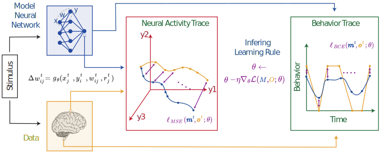

Method
Our aim is to understand how learning occurs in the brain by analyzing neural activity or behavior as an animal interacts with its environment. Specifically, we seek to derive a function that describes how synaptic weights—the connections between neurons—change based on biological factors. To simplify the analysis, we focus on a single layer within a neural network, characterized by the following:
- Neuronal Activity Generation: The input to the layer, \( \mathbf{x}(t) \), produces neuronal activity \( \mathbf{y}(t) \) through a weighted process involving the synaptic weights \( \mathbf{W}(t) \).
- Weight Update Rule: The weights \( \mathbf{W}(t) \) are updated using a biologically inspired rule \( g_\theta \) that depends on parameters \( \theta \), neuronal activities, current weights, and a global reward signal \( r(t) \).
The weight update is calculated as:
\[ \Delta w_{ij}(t) = g_\theta\left( x_j(t), y_i(t), w_{ij}(t), r(t) \right) \]
If direct observation of neuronal activity \( \mathbf{y}(t) \) is not possible, we employ a "readout" function \( f \) to compute observable variables \( \mathbf{m}(t) \) that summarize the activity.
To optimize the rule \( g_\theta \) using real or simulated data, we follow these steps:
- Model Output Generation: Generate a time series of outputs \( \mathbf{m}(t) \) from inputs \( \mathbf{x}(t) \) using our model.
- Loss Calculation: Compare the model output \( \mathbf{m}(t) \) to experimental data \( \mathbf{o}(t) \) and compute a loss function \( L \) that quantifies the difference between them.
- Parameter Optimization: Adjust the parameters \( \theta \) of the rule \( g_\theta \) using backpropagation and stochastic gradient descent to minimize the loss \( L \).
Our objective is to align the model's predictions closely with real data, allowing us to infer the biological rules underlying learning. In our experiments, we analyze how effectively the model recovers known learning rules under different conditions, such as varying levels of noise or sparsity in neural data.
This approach enables us to explore neuronal adaptation and the mechanisms of learning in both simulated and real-world scenarios.
Figure: Schematic overview of the proposed method. Animal-derived time-series data (yellow) and a plasticity-regulated in silico model (blue) generate trajectories \( \mathbf{o}^t \) and \( \mathbf{m}^t \). A loss function quantifies trajectory mismatch to produce a gradient, enabling the inference of the synaptic plasticity rule \( g_\theta \).